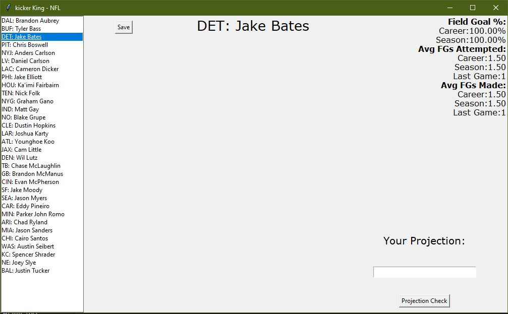

NFL Kicker Predictor
A sophisticated Python application providing real-time NFL kicker statistics and performance analysis through an intuitive graphical interface.
Technologies Used
Python
Tkinter
BeautifulSoup4
ESPN API
Project Overview

Real-time Kicker Analysis Dashboard
Features
- Real-time Data: Live NFL kicker statistics from ESPN
- Statistical Analysis: Track career & season field goal percentages, attempts, and success rates
- Visual Indicators: Color-coded projections comparing historical averages
- Offline Mode: Access previously saved kicker data for analysis
Implementation
Project Structure
NFL-Kicker-Predictor/
├── Classes/ # Core class definitions
├── Gui/ # User interface implementation
├── Local/ # Local data handling
├── Save/ # Data persistence operations
└── Scrape/ # Web scraping functionalityKey Components
- Modular architecture for maintainability
- Tkinter-based graphical interface
- ESPN data integration
- Local data persistence system
Technical Highlights
Performance Metrics
- Career field goal percentages
- Season performance tracking
- Average attempts per game
- Success rate analysis
Visual Analysis
- Green: Projection below historical average
- Red: Projection above historical average
- Real-time data updates
- Historical trend visualization
Resources
 GitHub Repository
GitHub Repository
License
This project is licensed under the MIT License. See the LICENSE file for details.